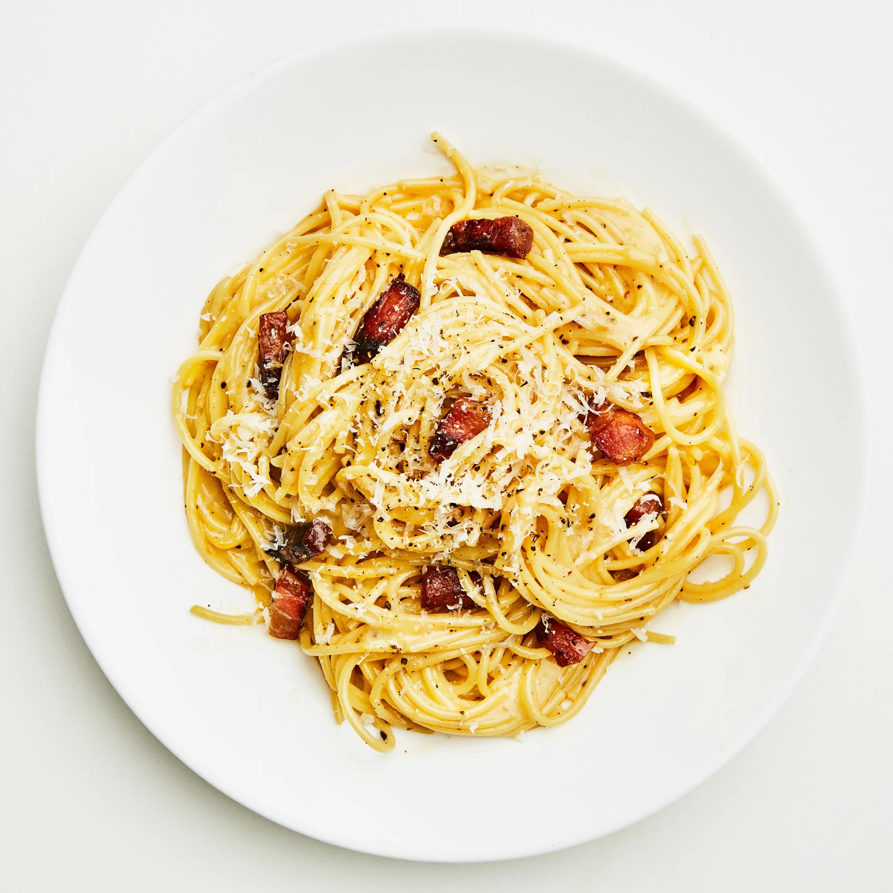

Italian Carbonara

This is a recipe for traditional italian carbonara
Carbonara is a quick and easy pasta to make that requires only a few things done carefully.
Prep time is about 10 min and the cooking time arround 20 min, so the whole meal can be prepared in half an hour!
This recipe is for 2 people, but you can adjust the ingredients for more.
If you follow these steps, you'll learn to make an exceptionally tasty dish!
Ingredients:
- 300g Spaghetti
- 3 Eggs
- 100g Guancialle
- 70g Pecorino
- Black Pepper
Steps:
- Let about 2,5l of water boil (0,7-1l per 100g pasta)
- Remove the skin and yellow fat (it can tase a bit rancid) from Guancialle. Cut into strips and afterwards into cubes 1-1,5 cm wide
- Whisk 2 egg yolks and 1 whole egg in a bowl with 50g grated Pecorino and a few pinches of black pepper until the mass is consistent
- Add 20g salt to boiling water, and let spaghetti cook (7-10g salt per liter of water)
- Cook Guancialle in a skillet on medium heat with occasional stiring so it's evenly cooked. You shouldn't add any oil to the skillet beforehand
as Guancialle is pretty fatty by itself and will sweat a lot. When it gets to golden-brown color, remove from heat
- Save half a cup of water from cooking pasta and strain it when al dente. Return Guancialle to stove without turning it back on, add pasta,
sauce and mix everything well. Add the saved pasta water and mix some more. Keeping the stove off is important, so the eggs don't to get cooked!
- Serve on a plate, with a few pinches of grated Pecorino sprinkled on it and a few pinches of black pepper